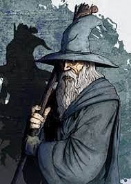

Gandalf, o Cinzento
Gandalf, por vezes Gandalf, o Cinzento ou Gandalf, o Branco é um Mago Istari, pertencente à raça dos Maiar, espírito angelical do mundo tolkienano, e costumava andar com Nienna com quem aprendeu a paciência e a compaixão (Silmarillion), mas diz-se que era conselheiro de Irmo Lórien. Foi à Terra-média, incorporado um velho, para ser um dos conselheiros dos homens e impedir que a escuridão voltasse.